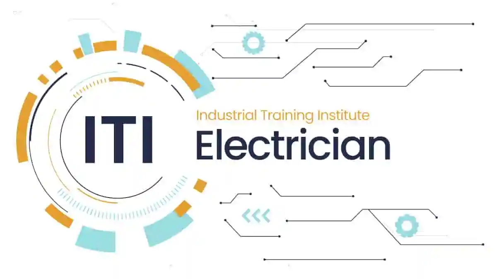
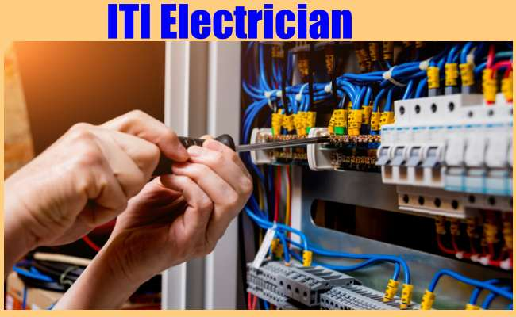

1 / 3

Caption Text
2 / 3

Caption Two
3 / 3

Caption Three
TI Electrician is a 2-year course, approved by the NCVT (National Council Vocational Training). ITI electrician course is a tradesman specializing in electrical wiring of buildings, transmission lines, stationary machines, and related equipment. ITI electrician syllabus includes the skills in which students get academic as well as practical knowledge of electrical systems.
ITI Electrician admission is provided on the basis of marks secured in entrance exams and can be merit based.After the completion of which, the candidates will have scope in various government and private organizations along with a handsome salary package.
The Electrician is needed to work in the public as well as private sectors. There are also many advantages to this career. In addition to these benefits, electricians can take satisfaction in playing an important role in their communities
ITI electrician eligibility
ITI electrician admission procedure
Dration of iti electrician course
ITI electrician jobs
Career options after this course
Business after this course
Electrician trade or branch under CTS- Craftsman Training Scheme is one of the most popular courses delivered nationwide through a network of ITIs. ITI electrician course is a short term professional technical course, which enables students to work on different types of electrical wiring and equipment. This course provides students with fundamental knowledge of the necessary electrical fields. Under this course, students are given a good knowledge of Electrical equipment, Wiring, safety in the electrical field, and other technical details. the detailed information and explanation are being discussed below.
| Sno | Topic | Description |
|---|---|---|
| 1 | Course duration | 2 Years |
| 2 | what is about? | Students are given a good knowledge of Electrical equipment |
| 3 | Eligibility criteria | 10th pass |
| 4 | Admission Process | Based on AIE CET Entrance Examination Result |
| 5 | Why choose AIE CET? | All entrance qualified students will get up to 100% scholarship and admission in Puran Murti Group of Institution. |
| 6 | Job Opportunities | Hindustan Petroleum, TATA Consultancy Services, Tata metaliks, Trident group |
| 7 | Salary Package | INR 20k to 25k Per month |
ITI Electrician course provides the knowledge of electrical systems and repairs electrical equipment. The following subjects will give the candidates with an idea of the subjects:-
.Professional skill / (Trade practical) .Professional knowledge/(Trade Theory) .Workshop Science & Calculation .Engineering Drawing .Employability Skills
The ITI Electrician job scopes in several places where the candidates can apply for jobs after finishing the course are given below:-
.Electrician .Wireman .Electrical Machine operator .Welder .Instructor- for this can join Crafts Instructor Training Scheme (CITS) in the trade for becoming an instructor in ITIs. .Supervisor (after experience) .Technician